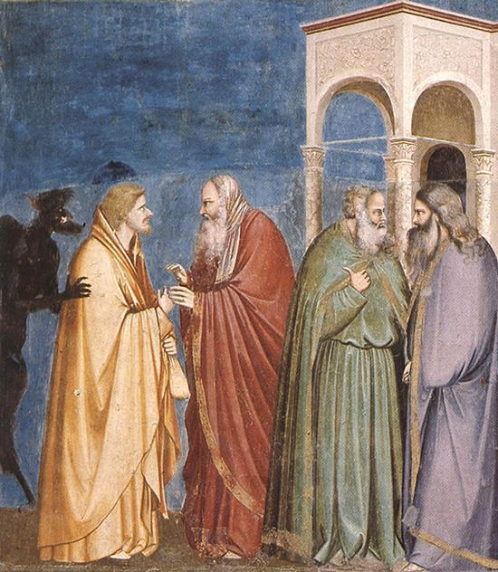

復活の主と出会い、再び使命を託されたペトロは、もはや以前の彼ではなかった。
主の昇天の後、彼は弟子たちの中に立ち、最初の指導的な行動を起こす。それは、欠けた使徒団を整えることであった。
そのころ、約百二十人の兄弟たちが集まっていた。その中でペトロは立ち上がり、語り始めた。
彼はまず、イエスを裏切ったユダについて語る。ユダは使徒の一人として数えられていたが、その務めを失った。ペトロは、この出来事が偶然ではなく、すでに聖書において示されていたことであると述べ、詩編の言葉を引用した。
そして、ユダによって空いた「務め」は、他の者によって満たされなければならないと宣言した。
ここで注目すべきは、ペトロの変化である。かつて恐れによって主を否認した彼が、今や共同体の前に立ち、聖書に基づいて語る者となっている。
彼はユダの出来事を、単なる悲劇としてではなく、神のご計画の中で理解しようとしている。これは、復活の主との出会いによって、彼の視点が大きく変えられたことを示している。
失敗を経験した者こそ、出来事を深く受け止め、意味づけることができる。ペトロはその歩みを始めていた。
ペトロは、欠員を補う者の条件を明確に示した。それは、主イエスの公の働きの初めから昇天に至るまで、使徒たちと行動を共にし、復活の証人となる者であることであった。
その条件に基づいて、ヨセフ (バルサバ) とマティアの二人が選ばれた。人々は祈り、「すべての人の心をご存じの主よ、どちらをお選びになったか示してください」と願った。
そしてくじを引いた結果、マティアが選ばれ、十一人の使徒に加えられた。
ここには、人の側と神の側の働きが調和している。
人は、基準を定め、慎重に候補者を選び出す。しかし最終的な決定は、祈りと神の導きに委ねられる。
ペトロはここで、独断ではなく、共同体と祈りを通して導かれるリーダーシップを示している。
それは支配する指導ではなく、神のみこころを共に求める導きであった。
ユダはイエスを裏切り、その後自ら命を絶ったと伝えられている (マタイ27章、使徒1章)。その最期についての記述には違いがあるが、彼が悲劇的な結末を迎えたことは共通している。
ユダは自らの罪を認め、後悔した。しかし彼は、赦しへと立ち返ることができなかった。
一方、ペトロもまた主を裏切ったが、彼は主のまなざしに立ち返り、回復された。
ここに、決定的な違いがある。
それは、罪の有無ではなく、その後、どこに向かうかである。
人は自分の力では立ち直ることができない。しかし、主に向かうとき、赦しと新しい使命が与えられる。
このマティアの選出は、小さな出来事のように見えるかもしれない。
しかし実際には、教会が新しい時代へ踏み出すための重要な一歩であった。
そしてその中心に、ペトロがいた。
かつて恐れに縛られていた彼は、今や共同体を導き、神のみこころを求める者となった。
こうして使徒たちは整えられ、やがて来る聖霊降臨の時を待つのである。

転機として描かれた、ユダが祭司長たちのもとを訪れる場面である。福音書の記述によれば、この行動は他の弟子たちに知られることなく、ユダ自身の判断によって進められた出来事として描かれている。
『マタイによる福音書』は、ユダが自ら進み出て、「あの男をあなたたちに引き渡せば、幾らくれますか」（26 章 15 節）と語ったと記している。この問いかけは、取引としての性格を明確に示す表現であり、ユダがイエスの身柄引き渡しを具体的な報酬と結びつけて提案したことを示している。祭司長たちはこの申し出を受け入れ、報酬として銀貨三十枚を支払った。 この金額は、旧約聖書において定められた「奴隷の評価額」（『出エジプト記』21 章 32節）と一致しており、当時の律法の世界では人の命を最も低く見積もる額として知られていた。